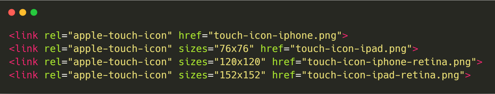

목차
- 브라우저 동작원리
- 이벤트 버블링
- strict
1. 브라우저의 주요기능
- 브라우저의 주요 기능은 사용자가 선택한 자원을 서버에 요청하고 브라우저에 표시하는 것입니다.
- 브라우저는 HTML과 CSS 명세에 따라 HTML 파일을 해석해서 표시하는데 이 명세는 웹 표준화 기구인 W3C(World Wide Web Consortium)에서 정합니다.
2. 브라우저의 기본 구조
- 사용자 인터페이스 - 주소 표시줄, 이전/다음 버튼, 북마크 메뉴 등. 요청한 페이지를 보여주는 창을 제외한 나머지 모든 부분이다.
- Contents Model이라는 개념이 추가되어 문서의 Outline을 잡고 Contents를 구성할 수 있게 되었습니다.
- 다양한 기능들이 추가되었기 때문에 호환성 이슈가 있습니다.http://html5test.com/index.html
- 마크업 검사를 통해서 outline을 확인하고 더 좋은 마크업을 적용하기 위해 노력할 수 있습니다. w3c validation
- image 태그의 alt 속성에 관련된 설명은 후에 SEO 관련 내용에서 다시 설명하도록 하겠습니다.
- HTML5 마크업시 Tag는 대소문자를 구분하지 않지만 가독성 측면이나 기존 개발 패턴에 준수하는 것이 좋기 때문에 소문자로 작성하는 것을 권장합니다.
- HTML5에서 가장 크게 변화된 시멘틱 태그들을 살펴보면 다음과 같습니다.
- 검색엔진이 잘 검색할 수 있도록 의미론적으로 웹을 구성하는 것이 중요해졌습니다.
- 의미론적인 웹 태그를 사용하면 검색봇이 해당 사용자의 키워드에 따라 강조하고 싶은 정보가 검색되도록 도움을 줍니다.
-
section, article, div의 차이는
- 내용이 독립적이고 스스로 설 수 있는 내용이라면 article
- 내용이 서로 관계가 있다면 section
- 의미적으로 관계가 없다면 div 사용
- 반대로 순전히 보여지는 것에만 집중하던 태그들은 CSS로 처리가능하기 때문에 사라졌습니다.
- basefont, big, center, font, striker, u 등...
- HTML Document에 사용되는 확장 사양들이 추가되었습니다.
- getElementsByClassName(), innserHTML, classList(has(), remove(), add(), toggle())
HTML5 태그들의 사용 가이드는 다음과 같습니다.
- 2. HTML4부터 사용되어 온 label 사용법은 다음과 같습니다.
form의 양식에 이름을 붙이는 태그입니다.
label 태그사이에 위치한 text, checkbox, radio 등은 클릭 가능 영역이 텍스트로 확장됩니다.
<label for=""> 와 <태그 id="">값은 서로 그룹을 형성합니다.
label 태그는 여러가지 form 요소들을 도와주고 편의성을 증진하는데 사용됩니다.
간단히 label안에 input 요소를 작성시는 for를 생략할 수 있습니다.
- HTML5에 다양하게 추가된 태그들은 모두 각각의 역할과 의미에 따라서 적재적소에 배치되어야 합니다.
- 2017년 말에 발표된 HTML5.2에서 새롭게 변화된 기능들을 살펴보면서 조금 더 다양한 활용방법과 사용법을 익혀보겠습니다.
- 새로운 기능과 삭제된 기능 그리고 개선된 기능이 있습니다.
- dialog 태그
-
rel 속성에는 기본값이 없습니다. 그리고 rel 속성이 생략되거나, 속성 값이 user-agent 에 인식되지 못하면 그 속성은 하이퍼링크나 대상 자원으로서 특별한 관련이 없다고 봅니다.
link의 rel 속성은 링크된 문서와의 관계를 지정하는데 검색엔진이나 브라우저에게 정보를 주어 사용자의 요청에 더 정확한 대응이 가능하게 해줍니다.
-
apple-touch-icon에 sizes 속성이 추가되었습니다.

- body 태그 내에서 style 태그 사용가능(가급적 head 요소에 작성(should) 해야 한다.)
- main 태그는 여러개를 사용할 수 있지만 보이는 것(의미론적으로만)이 하나여야 한다.(style로 가리는 것은 w3c 마크업 validation에 오류로 선언됨)
- div 요소를 dl 요소 내에 사용할 수 있다(조건적으로)
단일 dl 요소 내에 dt와 dd를 그룹핑한 div와 dt와 dd요소는 서로 형제 노드 관계로 존재할 수 없다.
또한, dl 내의 div는 dt와 dd 외 다른 요소가 들어 올 수 없다.
- dfn태그(학문적 개념이나 새로운 용어 및 전문어를 정의)의 li 태그 사용 가능
- fieldset에 사용되는 legend 태그에 heading요소(h1~h6) 사용 가능 (스타일 자유도 상승(기존에는 p만 가능))
- 주석 내에 연속된 하이픈 작성해도 됨 (nu HTML Checker에서 검사해보아도 경고 메시지로 변경)
- 삭제된 기능으로는 keygen(폼(form)양식에서 한 쌍의 키(암호화된 비밀번호)를 제공), inputmode(곧 브라우저에서도 depreacted 된다고 함), menu, menuitem 태그 및 속성이 있습니다.
- 주석 내에 연속된 하이픈 작성해도 됨 (nu HTML Checker에서 검사해보아도 경고 메시지로 변경)
- p 요소 하위의 Inline blocks, inline tables, floated, positioned block-level 요소 사용 불가
- 이러한 html5.2의 변화들이 가지는 목적성은 디자인의 자유도와 접근성 그리고 웹 표준에 따른 조금 더 의미론적인 검색엔진 최적화에 있습니다.
흔히 알려진 검색엔진 최적화는 구글과 네이버가 제공하는 검색엔진 최적화 가이드를 중심으로 정리할 수 있지만 직접적으로 어떻게 작동하는지는 영업비밀입니다.
title 태그와 설명(description) 메타 태그는 검색엔진이 페이지의 내용을 파악할 때 기본으로 사용하는 데이터들이며, title 태그는 해당 페이지의 제목을, 그리고 descripiton 메타 태그에서는 그 페이지에 대한 설명을 포함시키면 됩니다.
제목과 설명은 페이지를 잘 표현할 수 있도록 페이지마다 고유하게 작성합니다.
길이에 특별한 제한은 없지만, 네이버의 경우 제목은 15자 이내, 설명은 45자 이내를 권장하고 있습니다.
- 오픈그래프(Open Graph) 태그
- 오픈그래프 태그는 원래 페이스북(Facebook)에 공유될 때 사용되는 정보이지만, 최근에는 페이스북 뿐 아니라 여러 곳에서 활용되는 메타 데이터입니다.
- 제목 태그의 적절한 사용
HTML5 Outliner
- W3C Validator에서 확인할 수 있었듯이 제목 태그의 적절한 사용에 따른 Outline은 웹 페이지의 개요(Outline)을 설명하기에 충분합니다.한 페이지 내에 너무 많은 제목 태그들이 사용되는 것은 좋지 못합니다.
-
HTML4에서는 섹셔닝 요소와 함께 이루어진 outline이 목차역할을 하지 않았지만 HTML5에서는 섹셔닝 요소와 함께 이루어진 heading 요소들이 목차 역할을 합니다.
- 섹셔닝 요소들
- 섹셔닝 요소들로는 section, article, aside, nav 과 섹셔닝 루트 속성들 body, blockquote, details, fieldset, figure, td가 있습니다.
-
섹셔닝 요소 좋은 예시(헤딩을 함께 사용하면 헤딩 수준이 자동으로 바뀜.)
-
-
섹셔닝 루트 예시 (섹셔닝 루트 외부에서 내부 개요에 접근불가)
- 알기 쉬운 URL 사용(REST: Representational State Transfer)
- 페이지 URL에는 가급적 페이지와 연관되는 단어가 들어있는 것이 ID나 또는 이상한 이름의 매개변수가 들어 있는 경우보다 좋습니다.
이는 검색엔진 뿐 아니라 사용자들에게도 이 페이지가 어떤 페이지인지를 좀 더 쉽게 파악하는데 도움을 줍니다.
- 사이트맵의 작성
- 대표 URL
- 하나의 페이지에 대해 여러 URL이 존재할 경우 대표 URL(Canonical URL)을 사용하는 것이 좋습니다. 이 때 나머지 URL에 대해서는 대표 URL로 301 리다이렉션 시키거나 또는 페이지 내에 rel=“canonical” 표시를 추가해 주는 것이 좋습니다.
특히 메인 페이지인 경우 하나의 대표 URL만 갖도록 나머지 URL에 대해서는 301 리다이렉션 처리를 해 줄 것을 권장합니다.
(예를 들어 웹사이트 URL이 www.example.com 과 example.com 둘 다 가능한 경우, 둘 중 하나를 대표 URL로 정하고 나머지는 리다이렉션 처리)
- 앵커 태그와 텍스트
- 앵커 태그(a 태그)는 페이지 간 이동을 위한 태그입니다. 앵커 태그를 작성할 때는 이동할 페이지의 내용을 함축하는 간결한 텍스트를 사용해야 하며, 글자로 쓸 내용을 이미지(image)로 만드는 것은 좋지 못합니다.
- 모바일 대응이 잘 되어있는지(반응형)
- 스피드(자세한 내용은 google web conference 자료 내의 speedtest 관련 내용 참고)
- rel=“nofollow”와 robots 메타 태그
앵커 태그에서 검색엔진이 따라가기를 원치 않는 경우에는 다음과 같이 rel=“nofollow” 속성을 추가할 수 있습니다.

- 페이지 단위로 검색엔진의 접근을 막기 위해 HTML head 영역 내에 다음과 같이 robots 메타 태그를 추가할 수도 있습니다.
이 때 content 값에 noindex를 사용하면 해당 페이지는 검색 결과에서 제외되며, nofollow를 사용하면 검색로봇이 해당 페이지 내의 링크를 따라가지 않도록 설정할 수 있습니다. 기본 설정은 index, follow 입니다.
- 또 하나의 중요한 요소로 img 태그에 대한 alt 속성입니다.
alt는 이미지를 이해하지 못하는 유저 에이전트에게 이미지 내용을 전달하는 역할을 담당합니다.
이미지를 이해하지 못하는 유저 에이전트는 음성 브라우저나 text브라우저 이외에 검색 엔진 로봇 등도 여기에 해당합니다.
하지만, 검색 엔진 로봇에 대해서는 alt속성치를 다루는 방법이 상당히 애매하기도 하고 시기에 따라서는 검색 결과에 전혀 반영되지 않는 일도 있기 때문에 이 점에 주의해야 할 필요가 있습니다.
- 검색엔진과 alt 속성
- alt속성치의 문자열은 인식하되, 가산점에는 사용하지 않습니다.（meta요소 description이나 keywords와 같은 취급）
- alt속성치도 일반적인 text와 동일 취급합니다.
- title 속성을 사용하여 검색 유입을 올릴 수는 있습니다.
- alt의 좋은 예와 나쁜 예(spam으로 간주될 수도 있음. 접근성에도 위배)
참고자료
- 브라우저 동작 원리 (https://d2.naver.com/helloworld/59361)
- 브라우저 동작 원리를 이해한 후 성능향상 (https://juunone.github.io/browser/)
- HTML4와 HTML5(https://apost.kr/58)
- HTML5 명세(https://developer.mozilla.org/ko/docs/Web/HTML/HTML5)
- HTML5.2 CSP와 nonce (https://simjaejin.tistory.com/31)
- 검색엔진 최적화 seo 가이드 (https://blog.usefulparadigm.com/%EA%B2%80%EC%83%89%EC%97%94%EC%A7%84%EC%B5%9C%EC%A0%81%ED%99%94-seo-%EC%89%AC%EC%9A%B4-%EA%B0%80%EC%9D%B4%EB%93%9C-f003911b0a79)
- Outline 설계하기(https://www.slideshare.net/headvoy/html5-38560624)
- 이미지 요소와 alt 속성의 최적화(https://mrseo.co.kr/img%EC%9A%94%EC%86%8C%EC%99%80-alt%EC%86%8D%EC%84%B1%EC%9D%98-%EC%B5%9C%EC%A0%81%ED%99%94/)
- HTML5.3 리스트(2018.10.18 draft) (https://www.w3.org/TR/html53/)